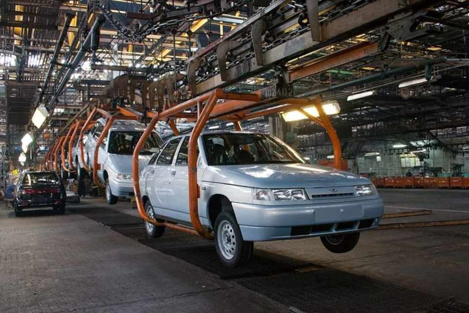

История модели ВАЗ 2112
История создания ВАЗ 2112 начинается в конце 90-х годов. Это была попытка создать более современный и динамичный автомобиль на базе ВАЗ 2110.
Основные этапы:
- 1999 год - Начало серийного производства.
- 2002 год - Модернизация двигателя.
- 2008 год - Завершение производства.